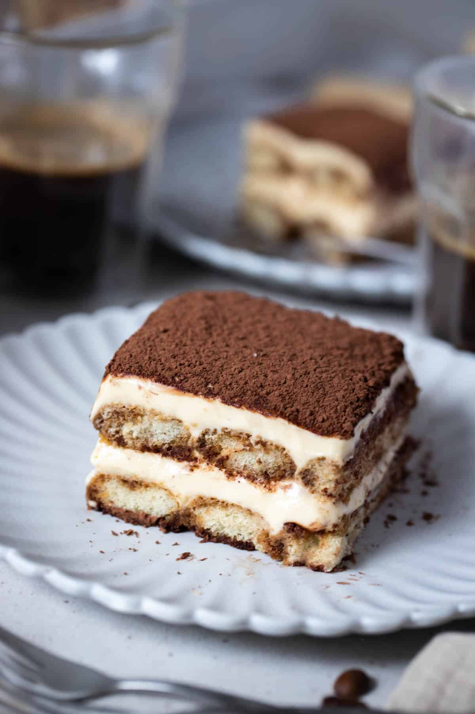

Tiramasu

Description
Tiramisu is a coffee-flavoured Italian dessert. It is made of ladyfingers dipped in coffee, layered with a whipped mixture of eggs, sugar and mascarpone, flavoured with cocoa.
Ingredients:
-
250 ml (250g) espresso coffee
-
40 ml (40g) Kahlua (optional)
-
6 large egg yolks
- 3/4 cup (165g) caster sugar
-
750 grams mascarpone or 3 cups
-
1 teaspoon vanilla bean paste
-
30 Savoiardi ladyfinger sponges
-
cocoa powder for dusting
Cooking Instructions:
-
Make the espresso coffee and add to a medium bowl. Add the Kahlua (if using). Set aside to cool.
-
Over your stove, set up a small saucepan of gently simmering water. Add the egg yolks and sugar to a large, heat-proof bowl that will fit snugly over the saucepan without allowing steam to escape.
-
Place the bowl carefully over the saucepan, making sure the bottom of the bowl does not touch the boiling water. Using electric beaters (or a whisk), continually beat the yolks and sugar over the heat until they become pale, fluffy and roughly double in volume. Allow to cool slightly.
-
Using electric beaters on low speed, add the mascarpone and vanilla bean paste to the egg yolk mixture and beat until stiff.
-
Place the coffee, Savoiardi ladyfinger sponges and a 18 X 29 cm tray on a bench, ready to assemble.
-
Working quickly, dip each side of the sponge fingers into the coffee and Kahlua mixture. * Only dip for 1 second each side, as too long will cause them to become too soggy.
-
Allow any excess coffee to drip from the sponges and assemble them in a single layer in the bottom of the dish. If there are any gaps, cut some sponge fingers to fit.
-
Spread half of the mascarpone mixture evenly over the top of the sponge layer.
-
Repeat this process with a final layer of coffee soaked sponges. For the final layer, either spread or pipe the remaining mascarpone over the top.
-
Cover and refrigerate for at least 4 hours (or overnight is best).
-
Top with a sprinkle of cocoa powder or some dark chocolate shavings, if you prefer.